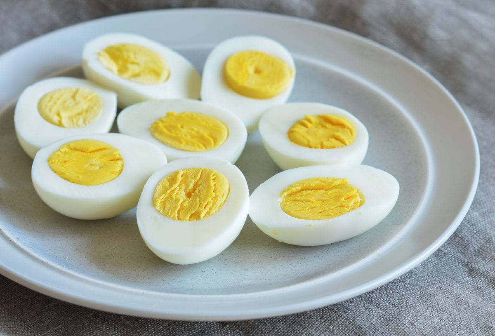

Perfect Hard-Boiled Eggs

This is a perfect boiled_eggs looks like!
Use this recipe for perfectly cooked hard-boiled eggs. By adding a little vinegar and salt, the eggshell peels off so easily without tearing or sticking. I have been making them this way for years!
Wondering how to make hard-boiled eggs? We’ve got you covered. Learn how to perfectly boil eggs every time with our top-rated recipe!
Ingredients
- 1 tablespoon salt
- ¼ cup distilled white vinegar
- 6 cups water
- 8 large eggs
Steps
- Gather all ingredients.
- Combine salt, vinegar, and water in a large pot, and bring to a boil over high heat.
- Add eggs one at a time, being careful not to crack them. Reduce the heat to a gentle boil, and cook for 14 minutes.
- Once eggs have cooked, remove them from the hot water, and place into a container of ice water or cold, running water. Cool completely, about 15 minutes. Store in the refrigerator up to 1 week.
- Enjoy!